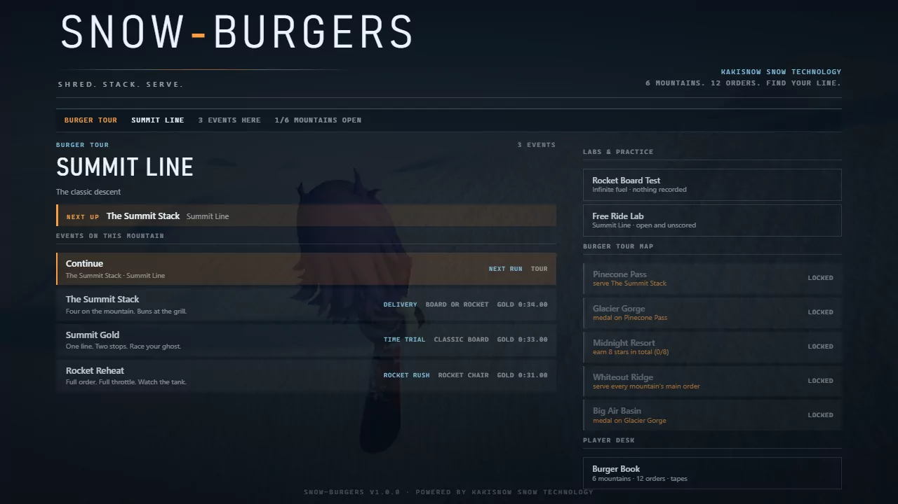
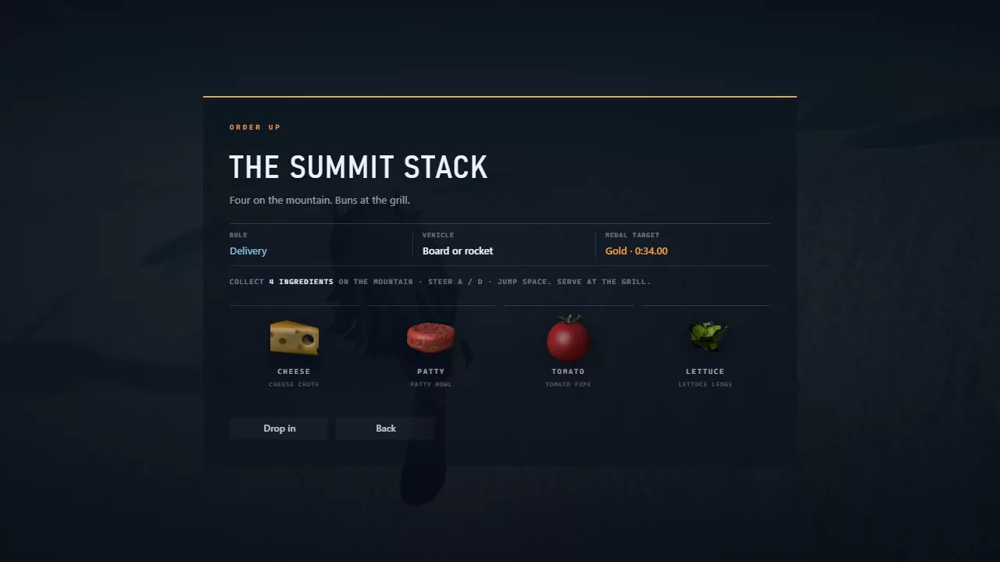
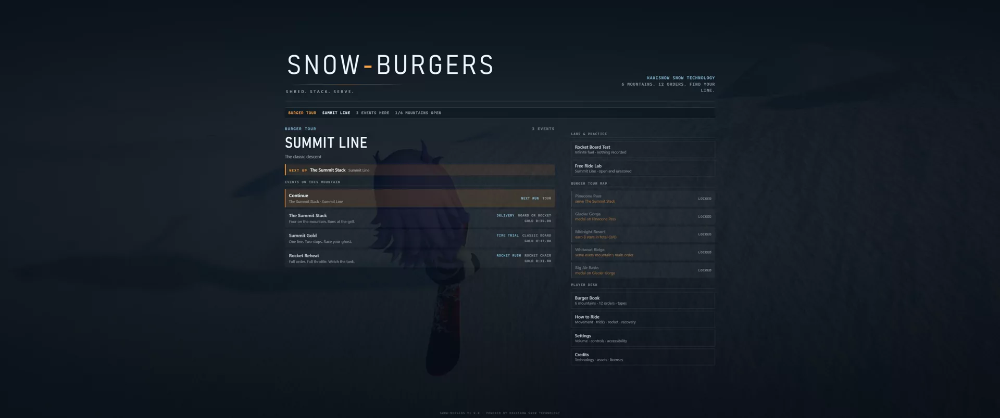
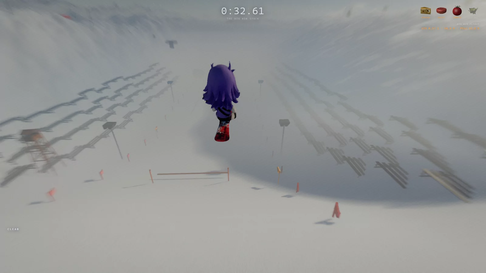
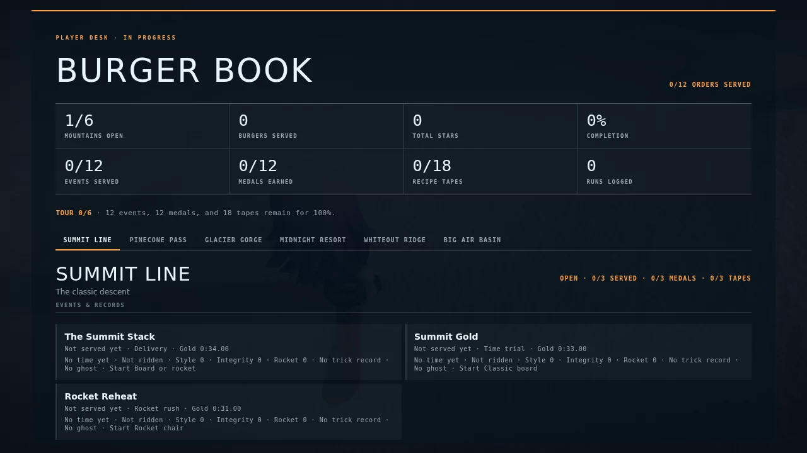
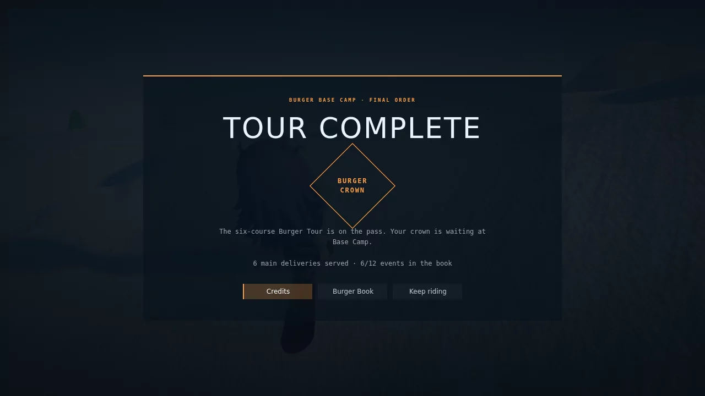
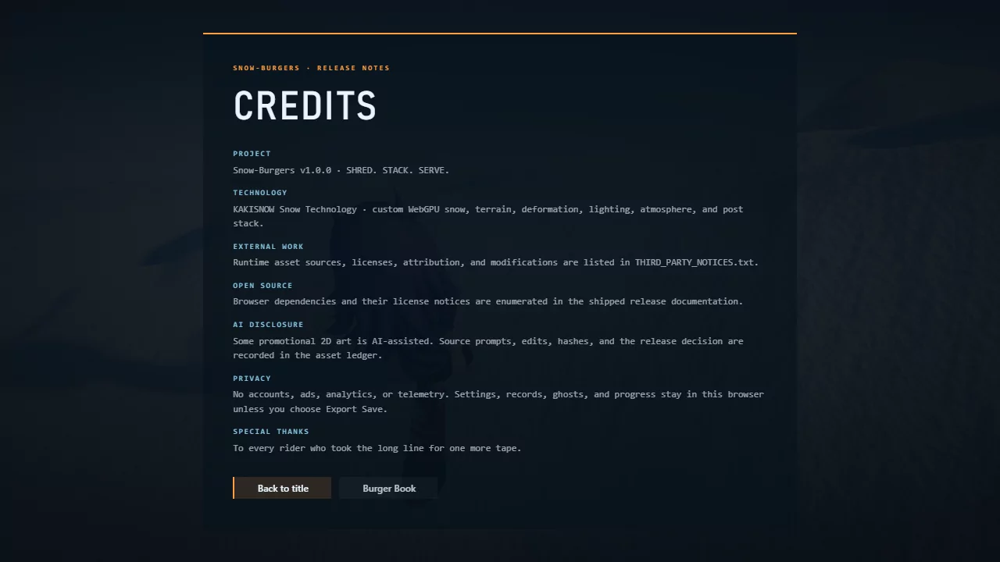

Current phase
Repository safety and the clean baseline are established. The exact production bundle completes all twelve events in Windows Chrome/WebGPU with no console or GPU validation errors, and all six real-heightfield route sweeps pass 600/600 seeds with a comfortable physical margin. Gameplay, camera, product UI, progression/endgame, adaptive-score core, accessibility/control completion, validation-before-deploy, and replacement-asset promotion have cleared independent critique. The registry-derived Burger Book tracks 6 courses, 12 events, and 18 tapes; Tour Complete, a distinct 100% state, credits, continued play, cross-course starts, and game-owned save confirmations pass real Windows Chrome/WebGPU review. The final 74.560-second showreel passes independent frame-by-frame critique. Commercial release remains blocked by the single strict RockerKaki/remove.bg provenance check; physical-device, human listening/colour, and exact target-GPU checks remain owner gates.
Workstreams
Baseline facts
| Area | Observed | Status |
|---|---|---|
| 01 | Six course records, twelve event records, eighteen authored tape placements. | Registry verified |
| 02 | Node 22.22.1, npm 10.9.4, Windows Chrome 151.0.7922.108. | Environment recorded |
| 03 | RTX 5080 16 GB and RTX 2080 8 GB visible through WSL; target measurements must name the GPU actually exercised. | Hardware recorded |
| 04 | The baseline runtime asset tree was 22,713,084 bytes. The promoted thirteen-model Snow-Burgers set is 2,010,952 bytes and has a deterministic source/runtime chain; RockerKaki's remove.bg step remains the sole strict rights blocker. | One release blocker |
| 05 | Historical detached baseline: npm ci, 90/90 tests, and production build pass. The converged package now passes 182/182 tests and build. | Reproducible |
| 06 | All twelve events reached results in fresh Windows Chrome/WebGPU runs; zero console errors and zero WebGPU validation errors. | 12 / 12 complete |
| 07 | Final 2560×1440 Burger Run p99 presentation intervals are 3.1 ms Summit, 5.4 ms Big Air, and 4.3 ms Whiteout. Counts are 382/2.06 M, 635/2.59 M, and 522/2.18 M draws/submitted triangles; GPU completion timing was unavailable. | Final matrix measured |
| 08 | The corrected live-denominator playthrough harness completes all twelve final production events, including two- and five-ingredient orders. Six fresh GPU-heightfield route sweeps pass 600/600 seeds; worst demand is 0.6587 against a 0.84 physical ceiling. | Final runtime pass |
| 09 | Fresh accepted classic 16:9/21:9 and rocket 16:9 runs report 2.53–2.54 s, 49.2–49.3 m, and 18.5–18.7 m clearance with visible grounded landing cues. | P1 accepted |
| 10 | Candidate Pages deployment now requires a successful main validation, checks out that exact SHA, and reruns strict release validation plus build. Branch pushes cannot deploy; strict validation currently fails only the documented RockerKaki/remove.bg hero-provenance check. | H accepted · blocker visible |
Before evidence


Candidate evidence · accepted final cut
{kind=link}

{kind=link}

Showreel: 74.560-second gameplay capture (manifest) covers title, order, carving, pickup, trick, hazard, rocket, Big Air, burger finish, results, Burger Book, and completion. The video uses disclosed live/runtime/save staging and independently passes required-beat, transition, stale-state, format, and error review. It is a silent visual evidence reel; audio remains a separate hardware listening gate.

{kind=link}

{kind=link}

{kind=link}

{kind=link}

{kind=link}

Critic log
Chronological rows retain superseded findings from earlier builder and critic rounds so the gauntlet is auditable; an earlier open or rejected row is not a claim about the current corrected artifact. The current D2, F4/F5, G, H, showreel, and final-matrix closeout rows are appended below.
| Pass | Artifact exercised | Largest defect | Disposition |
|---|---|---|---|
| C1 | Real 1280×720 and 3440×1440 title → order → run → pause, 2560×1440 results, then a focused simulated-pad recheck. | Controller focus initially excluded Settings ranges; all six now focus, adjust, dispatch the normal path, persist, and leave safely. | P1 accepted |
| A1 | Real Windows Chrome/WebGPU classic seeds 1–3 and rocket Big Air completion; direct clean/short/hard landing checks; 97 tests and build. | No remaining P0/P1 in the targeted launch/refuel slice. Persistent Big Air landing telemetry is still needed because a one-frame landing signal cannot support robust presentation or browser acceptance. | P1 slice accepted |
| B1 | Real WebGPU Big Air showcase, finish pixels, direct arch arm probe, source/unit/build review; later Windows probes timed out. | Obstacle arm is structurally sound, but the Big Air lip still hides the landing and lacks predictive active-control framing. | P1 follow-up required |
| F1 | Four-view pixels and Khronos validation for all thirteen replacement GLBs; generator rerun, anchor/source/report audit. | Several focal models read as primitives, five assets changed hashes on rerun, rocket anchors mismatch runtime, and authorship language overclaims the documented process. | Rejected · revise |
| C2 | Fresh 1280×720, 3440×1440, and 1024×576/125%-equivalent flows; keyboard/pad navigation; hint-mode probes; 100 tests and build. | At the closest zoom layout, controller focus can move to the below-fold Back action without scrolling it into view. | P1 accepted · P2 fix |
| H1 | Strict/report-only validators, workflow event/SHA/permissions audit, 107 tests and build. | Deploy is safely bound to a green exact main SHA, but hosted CI has no Playwright boot smoke and candidate hashes are not cross-checked. | P1 follow-up |
| H2 | Focused release tests, normal production-preview smoke, two synthetic fatal-error smokes, combined-report behavior, artifact path, build, and exact-SHA workflow recheck. | No remaining P0/P1 mechanism defect. Hosted software evidence proves boot/error presentation only; discrete WebGPU gameplay and frame-budget certification remain manual gates. | P1 accepted |
| C3 | Fresh 1280×720 title/order/results, 1024×576 keyboard/pad Settings, live 3440×1440 Big Air result fixture, 117 tests and build. | No C3 P0/P1 remains. A fresh native-ultrawide autopilot completion timed out, so existing gameplay pixels plus the live fixture cover presentation while that exact end-to-end capture remains a manual integration gate. | Accepted |
| C4 | Fresh 1280×720 first-PB, repeat-delta, and ordinary-event result fixtures; 640×360 stress pass; 35 focused tests. | No P0/P1 remains. The below-target 640×360 card scrolls and places Retry below its initial viewport; the required 1280×720 presentation fits fully. | Accepted |
| B4 | 45 focused gates; classic 16:9/21:9 and rocket 16:9 WebGPU completions; look/reduced-motion/Summit probes; landing-grounding and corrupt-save checks. | No P0/P1 remains. Ultrawide telemetry scale, two-run reload capture, and a full obstruction time series remain P2 evidence gaps. | Accepted |
| E3 | Real preview state trace, analyser spectra, 7 focused tests, 1,120 transition/update stress, 16,800 finite parameter writes, full build. | Core and existing runtime states pass. Finale/credits calls plus real Windows speaker/headphone loudness and masking review remain release gates. | Core accepted |
| F2 | Two clean Blender runs, 13 Khronos validations, safe-output refusal, runtime hash/mtime audit, 52 four-view renders, source/contracts/reports, and social-art derivative regeneration. | Determinism and provenance language pass. Rocket cargo is 0.30 m off its runtime anchor; seven focal models need revision; hut/village still read as placeholders; draw counts are stale. Six 3D candidates pass visual review subject to runtime smoke. | P1 correction active |
| A4 | 154 tests/build; nine-rate full-window and natural-lip sweeps; 90,000 randomized segment probes; false-launch, coyote, crash, pad-edge, disconnect, and allocation review. | The first correction missed far-edge authored-window crossings and was rejected. Segment-versus-lane intersection closes that defect with zero mismatches; physical-pad feel and close rail pixels remain integration gates. | Accepted |
| D2 | Fresh/full/tour/100% fixtures, cross-course and same-course order links, keyboard and simulated-pad save confirmations, 1280×720 and 3440×1440 pixels, 157 tests/build, and real Windows Chrome/WebGPU. | No P0/P1 remains. A brief boot-fade wordmark can overlap the first order card; the bounded ultrawide Book intentionally leaves generous side space. | Accepted |
| F4 | Thirteen promoted GLBs, 52 four-view renders, two clean Blender generations, Khronos validation, contract/hash checks, Summit 16:9/21:9 and rocket Windows WebGPU runs. | All replacement silhouettes, materials, anchor contracts, camp dressing, pickup collection, burger finish, and rocket behavior pass. The remaining remove.bg uncertainty belongs only to RockerKaki. | Accepted |
| F5 | Historical audit hash before/after default validation, guarded archival output, separate runtime report, 16 focused checks, 178 full tests, build, and all 13 runtime-manifest hashes. | The validator no longer overwrites immutable source evidence. Default output is a distinct runtime report; historical output requires explicit archival opt-in. | Accepted |
| D2-final | Independent progression/endgame recheck with fresh, six-delivery, full-book, cross-course, save-confirmation, and 1280×720/3440×1440 fixtures. | Registry-derived Burger Book, authored tapes, Tour Complete, distinct 100%, credits, continued play, and safe save actions pass. | Accepted |
| F4/F5-final | Thirteen promoted runtime GLBs, exact source/runtime hashes, Khronos validation, immutable historical audit protection, and real WebGPU ingredient/burger/rocket smoke. | Active replacements pass visual/runtime review; the former thirteen supplied GLBs are historical audit inputs only. RockerKaki is the separate strict rights blocker. | Accepted |
| G-final | Independent Windows Chrome/WebGPU accessibility/control recheck: 180/180 focused-suite tests and build, keyboard/touch/settings/tutorial/caption/reduced-motion evidence, and corrected standard/generic-pad Book/reset/Credits routes. The converged package now passes 182/182. | No P0/P1 remains in the independent slice. Physical controller/phone ergonomics and human colour-vision review were unavailable. | Accepted · device/human gate |
| H-final | Report-only and strict release validators, production-preview boot/error smoke, exact-SHA Pages gating, and release artifact checks. | Fail-closed deployment mechanism passes; report-only remains explicit and strict exits 1 for exactly `assets.hero-provenance` (RockerKaki/remove.bg). | Accepted · blocker visible |
| ROUTES | Six fresh Windows Chrome/WebGPU heightfield sweeps, 100 seeds per course, independent 0.70 validator, and course identity version 2. | 600/600 pass with zero height error. Worst lateral demand is 0.6587, leaving 0.1813 inside the 0.84 physical carve ceiling; stale version-1 ghosts are honestly ignored. | Accepted |
| CAMERA-FINAL | Twenty exact-production scenarios and 2,235 sampled frames: six finishes, five rails, snowcat, avalanche, Big Air, reduced motion, 16:9/21:9, and near/far zoom. | Zero below-terrain, non-finite, solid-intersection, violent-snap, oscillation, console, WebGPU, or failed-request findings; representative pixels pass visual inspection. | Accepted |
| SHOWREEL | 74.560-second Windows Chrome/WebGPU recording with title, order, ride, pickup, trick, hazard, rocket, Big Air, burger finish, results, Book, and completion. | The first cut was rejected for stale 3/6 title state. The corrected SHA-256 53de313f… shows 6/6 before the Book and independently passes frame-by-frame transition/error review. | Accepted |
| INTEGRATION | Independent live-title/Summit-flow review plus the final event, placement, responsive, camera, performance, and showreel evidence package. | No material incoherence, overdesign, clutter, pacing defect, or cross-system regression remains. External human/device gates and the hero-rights blocker are kept separate. | Accepted |
Secondary C1 corrections are built: the lab hint now follows explicit mode/screen state, the title scope is registry-derived, and bounded native-ultrawide scaling preserves the 720p layout. H2 adds a deliberately narrow known-WebGPU-unavailable classifier: authored availability failures reach the product explanation, while unrelated device and buffer invariants fail CI. The combined report is emitted even on failure. F4/F5, D2, G, and H are accepted independent slices; strict release validation still exposes the single RockerKaki/remove.bg hero-provenance blocker.
Highest-impact open findings
The authoritative ranked list, evidence, correction, and acceptance check lives in PLAYTEST_FINDINGS.md. Finale/credits, the player-facing Burger Book, all thirteen active procedural replacement models, accessibility/control completion, release gating, final event/placement/performance evidence, and the showreel are accepted. Remaining owner gates are physical controller/phone ergonomics, human listening/colour review, exact target-GPU certification, and the separately documented RockerKaki commercial-rights decision.